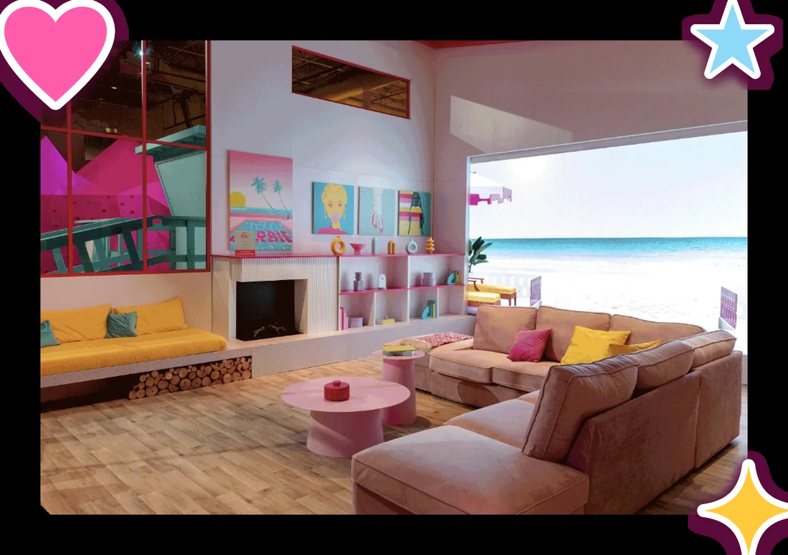
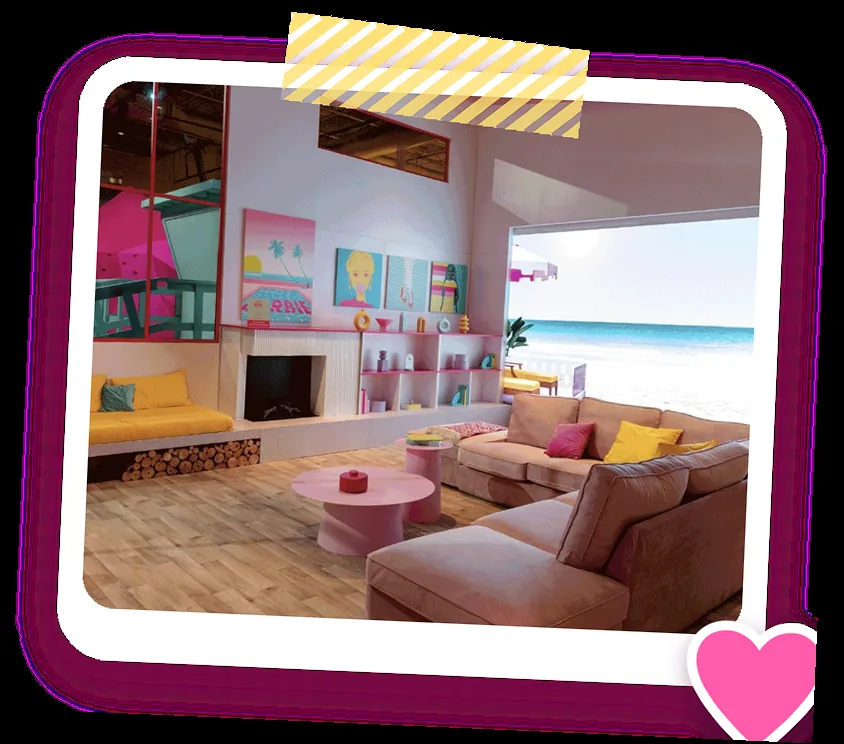
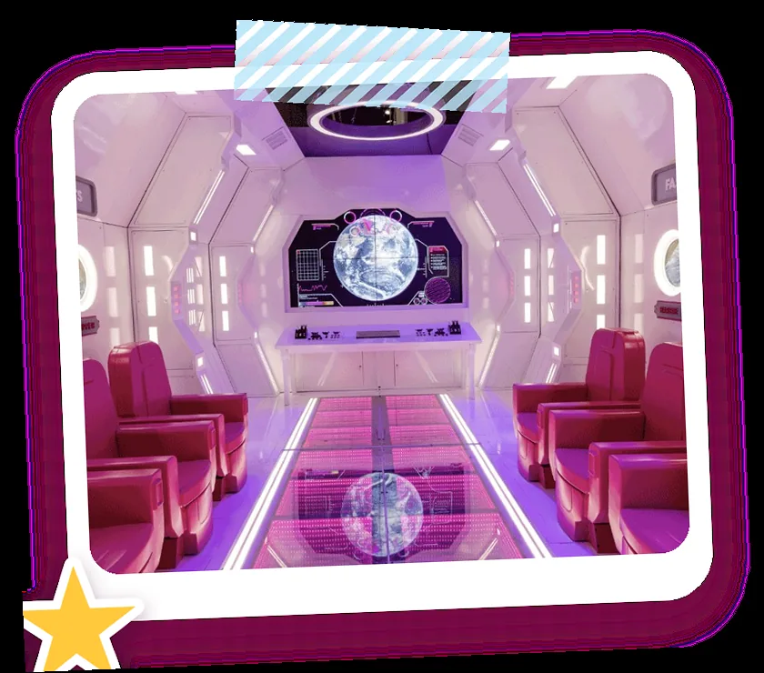
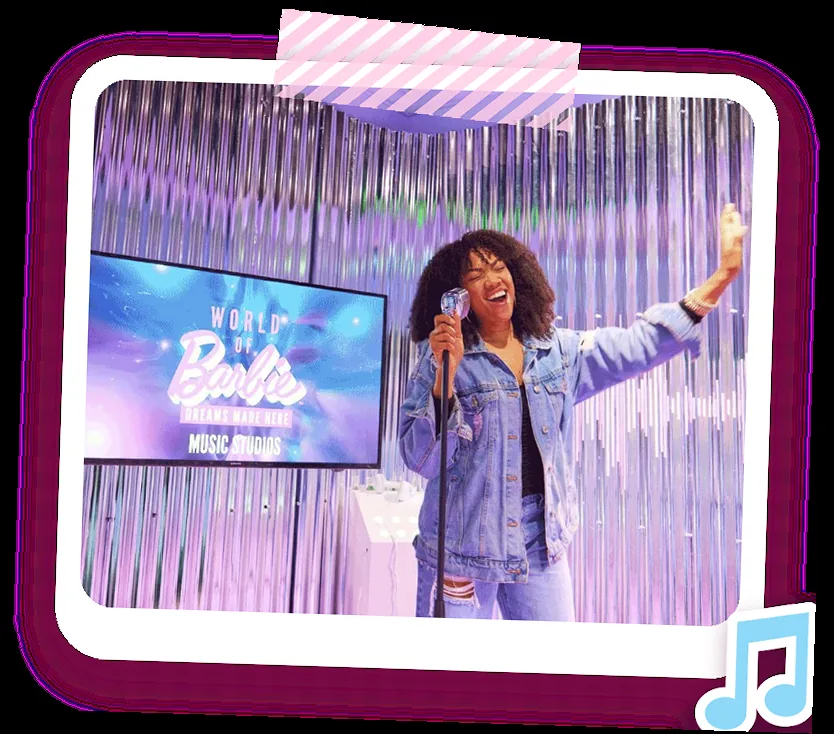
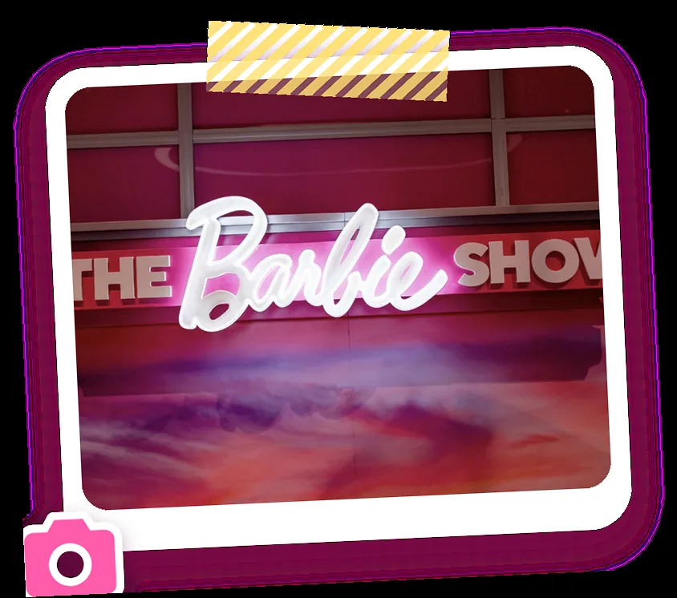
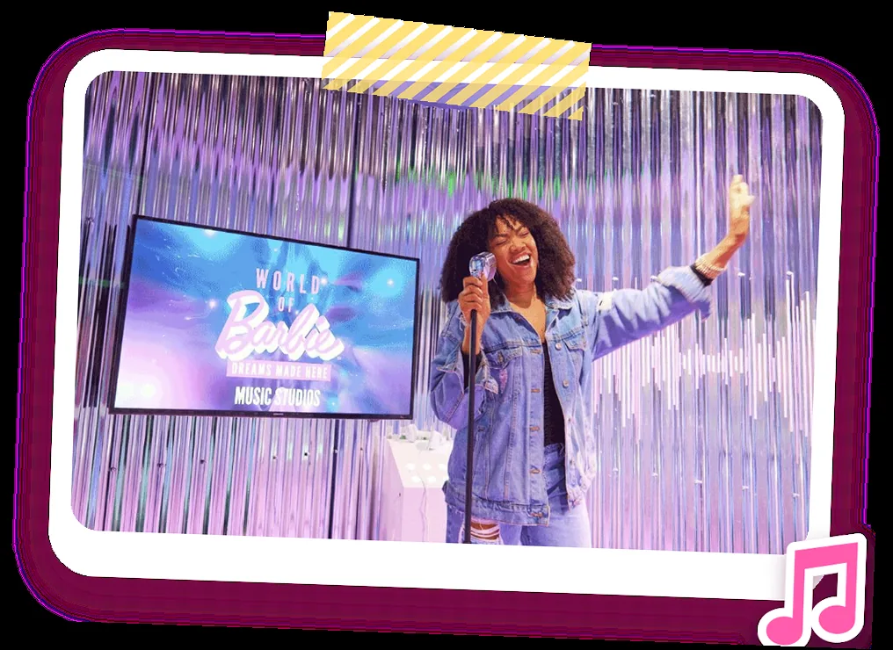
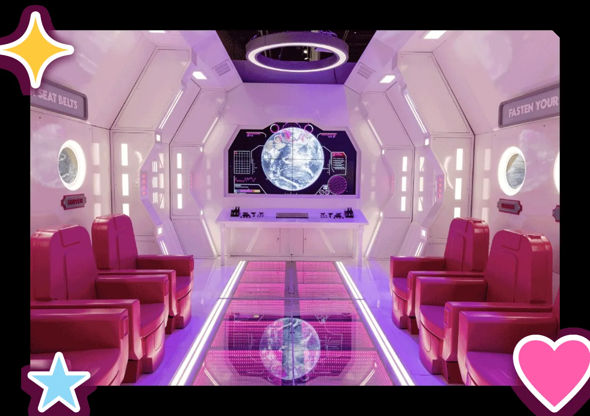

Defensa oral · Universo inmersivo de marca
El universo de marca que se recorre y se juega.
Anyelit Sharit Daza
Medios de Comunicación Digital · Prof. Ángela Ballesta · ESIC
PREGUNTA PARA EMPEZAR
¿Te imaginas vivir un día en el mundo de Barbie?

Apartado 1 · La marca
Casa de Barbie en Airbnb, con Ken de anfitrión. Dos noches en julio de 2023.
4 huéspedes
Atracción que viaja: casa, camper, carreras y museo.
+250.000 visitantes
Restaurante temporal en Nueva York y Chicago, hasta septiembre de 2023.
Alcance: no documentado
Suite temática en el piso 13, desde el 10 de julio de 2023.
Alcance: no documentado
Elegí World of Barbie porque junta casa, camper, carreras y museo en un solo recorrido.
Fuentes: Airbnb (2023); Resident (2023); Block Club Chicago (2023); Hilton (2023). Criterio de elección: decisión de la autora.
Apartado 1 · La experiencia
30.000 pies²
Square One, Mississauga. Debut mundial. Más de 100.000 visitantes.
20.000 pies²
Santa Monica Place, en dos pisos. Debut en EE. UU. el 14 de abril de 2023.
25.000 pies²
Stonebriar Centre. Abrió el 17 de noviembre de 2023.
Producción: Kilburn Live, con Mattel e IMG.
Entradas: desde US$34,50 adultos y US$25,50 niños de 1 a 12 años.
pies² = pies cuadrados. 20.000 pies² son unos 1.860 metros cuadrados.
Fuentes: Kilburn Live y Mattel (2022); Irick y Navarro (2023); Resident (2023); Chieffi (2023).
Apartado 1 · Objetivos y públicos
Contexto: las ventas de Barbie habían bajado de unos US$1.680 millones (2021) a US$1.490 millones (2022).
No hay metas con cifras publicadas. «Ventas brutas» es todo lo vendido, antes de restar costos.
Fuentes: Kidscreen (2022); Stoddard (2022); Chieffi (2023); Irick y Navarro (2023); Brophy (2023).
Apartado 2 · El recorrido
1
Sala de Barbie con muebles playeros
2
Dream Closet, el clóset de vestidos
3
Tobogán a una piscina de pelotas rosa
4
Dreamhouse: cocina, patio y piscina
5
Camper y cohete con control de misión
6
Carreras: laboratorio, música y TV
7
Pasarela y cajas de muñeca gigantes
8
Museo de 1959 a hoy
En total son 17 áreas que se recorren en 45 a 60 minutos.
Fuentes: Bianco y Leopo (2023); Resident (2023); El Universo (2023); Hewitt (2023). El orden puede cambiar según el día.
Apartado 2 · Inmersión
Sí
Espacios a escala real: una casa que se camina.
45–60 min
Para recorrer las 17 áreas.
Alta
Ser DJ, presentadora o astronauta, y personalizar una Barbie.
Inmersiva: el público no solo mira el mensaje, lo vive.
Comparación: Malibu DreamHouse también es de participación alta, pero guiada y para 4 personas. El Café y la Suite, participación baja.
Fuentes: Pine y Gilmore (1998); Brakus et al. (2009); Resident (2023); Hewitt (2023). Valoración: punto de vista de la autora.
Apartado 2 · Tipo de inmersión
No es de tecnología (no hay realidad virtual ni aumentada) ni de cocreación (los papeles ya vienen escritos).
Fuentes: Bianco y Leopo (2023); Resident (2023); El Universo (2023); Kilburn Live y Mattel (2022). Clasificación: lectura de la autora.
Apartado 2 · Zonas

Sala de la Dreamhouse

Cohete con pantalla de control

Estudio de música

Set de TV: The Barbie Show
Son fotos de la edición de Yakarta, con zonas parecidas a las de mi trabajo.
Fotos: World of Barbie Jakarta, sitio oficial (worldofbarbiejakarta.com). © Mattel. Barbie es marca de Mattel.
Apartado 2 · Sentidos
Sentido
Qué hay
Para qué
Vista
Rosa y fucsia de piso a techo. En una visita se tomaron +500 fotos.
Reconocer la marca y crear escenas para fotos.
Oído
Música pop, kit de DJ y karaoke.
Crear fiesta e invitar a participar.
Tacto
Tobogán, pelotas y volante de la camper.
Pasar de mirar a jugar.
Gusto
Solo en eventos: cócteles y snacks.
Invitar a adultos con noches 21+.
Olfato
No documentado.
Sin intención documentada.
Es inmersión de espacio y acción, no de sabores ni olores.
Fuentes: Bianco y Leopo (2023); Resident (2023); Hewitt (2023); Irick y Navarro (2023). La columna «Para qué» es lectura de la autora.
Apartado 2 · Narrativa y rol
Espectador
Explorador
Participante-protagonista
Cocreador
Actúa: presenta noticias, hace de DJ, de astronauta o de científica.
No cambia la historia: los papeles los escribió la marca. Solo elige accesorios y ropa, y hay extras de pago.

Foto: estudio de música, World of Barbie Jakarta (sitio oficial). © Mattel.
Fuentes: Stoddard (2022); Kidscreen (2022); Resident (2023); Bianco y Leopo (2023); Chieffi (2023). Ubicación del rol: análisis propio.
Apartado 2 · Relato de la marca
La muñeca debutó el 9 de marzo de 1959. El museo muestra su historia hasta hoy.
Salas de ciencia, astronauta, música y TV: el lema «puedes ser lo que quieras» hecho acción.
Muñecas de distintos cuerpos, colores de piel y capacidades, con sillas de ruedas y vitiligo.
Mi lectura: no repite la película; cuenta la marca de principio a fin y tú la vives en primera persona.
La tecnología solo apoya: cohete con control de misión y estudio de TV. No hay realidad virtual ni aumentada.
Fuentes: Irick y Navarro (2023); Stoddard (2022); Resident (2023); Spectrum News 1 (2023); Bianco y Leopo (2023).
Apartado 3 · Comunicación
Los visitantes también cuentan la historia: llegan de rosa, posan y comparten.
Fuentes: Kidscreen (2022); ABC7 (2023); Irick y Navarro (2023); Resident (2023); Hewitt (2023); Bianco y Leopo (2023).
Apartado 3 · Promesa y realidad
Dreamhouse a escala real
Cumplido
Camper con hamaca y compartimentos ocultos
Cumplido
Cajas de muñeca gigantes y estudio de TV
Cumplido
Centro espacial con control de misión
Cumplido
Exhibición sobre la historia de Barbie
Cumplido
Que las jóvenes se sientan capaces y los adultos se reinventen
Cumplido, con matiz para adultos
Fuentes: Stoddard (2022); Resident (2023); Guzman (2023); Irick y Navarro (2023); Bianco y Leopo (2023); Hewitt (2023).
Apartado 4 · Resultados
Hay mucha asistencia; el efecto en la marca no está medido.
Fuentes: Irick y Navarro (2023); Resident (2023); AFP (2023); Bianco y Leopo (2023). La película se estrenó el 21 de julio de 2023.
Apartado 4 · Objetivos
Llevar el mundo de Barbie a escala real
+250.000 visitantes, según los organizadores
Cumplido
Inspirar a las más jóvenes a ser lo que quieran
Solo testimonios sueltos; no hay encuestas
Indicios, no medido
Mantener la gira
Fechas ampliadas y apertura en Frisco
Cumplido
Efecto en ventas o imagen de marca
Ninguna fuente separa el efecto de la atracción del de la película
No puede afirmarse
Se cumple en alcance y continuidad; el mensaje no está medido.
Fuentes: Resident (2023); Bianco y Leopo (2023); Kidscreen (2022); Stoddard (2022).
Apartado 4 · Para quién es
Está pensada sobre todo para niños, y los adultos también la disfrutan.
Fuentes: Hewitt (2023); Chieffi (2023); Irick y Navarro (2023); RetailWire (2023); Bianco y Leopo (2023).
World of Barbie
¿Preguntas?
Anyelit Sharit Daza
World of Barbie
¿Preguntas?
Anyelit Sharit Daza
